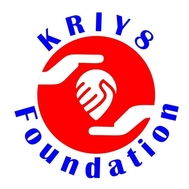

{% extends "layout.html" %}
{% block content %}

Kriy8 Foundation is the brainchild of our youngest member-- Kriya Shah -- a high school student, who
envisaged an organization that would appeal to the adolescents like her to make them better informed
about health and lifestyle issues and help them to be an “alert and aware” generation of tomorrow.
From this noble thought, new vistas emerged and led us to expand the scope of the organization to
involve various patient groups. The Foundation aspires to work with like-minded individuals with the zeal and sincerity to do something
different but purposeful to people around them, thereby "Helping People Help Themselves".
Objectives:
- Disseminate information on adolescent health, hypertension, kidney diseases, and other lifestyle related illnesses
- Guide and engage the future generation about matters of health and disease through various digital platforms
- Assist deserving students to fulfill their aspirations in a structured manner
- Assist deserving patients of advanced kidney disease to pursue quality healthcare
Kriy8 Foundation is registered under the Public Trusts Act 1950: Registration E-35865.
{% endblock %}